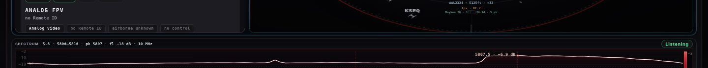

Bands
We watch the bands on that job. Common air links sit in 2.4 GHz and 5.8 GHz. Other bands are added when the kit on site actually covers them.
Software
Named place and time. Fielded today. More layers in development.
Fielded todayRADIO ListeningRF LIVE

Receive-only radio picture of a named place and time. Energy in the bands we are watching is logged. Quiet air is a valid hour.
RID-only maps miss aircraft that do not broadcast an ID. Those aircraft can still radiate on a control or analog FPV link. This layer is how that energy is recorded. Presence and band. Not a tail number. Not a legal intercept order. Not direction-finding. Radio-only contacts have no map pin.
| RID receiver | ESP32-S3. Bluetooth LE 1M, coded S8, extended ads. Cooperative Remote ID listen. |
|---|---|
| RF | Spectrum on the bands the kit covers that job. Common air links: 2.4 GHz and 5.8 GHz. This frame: 5800–5810 MHz, 10 MHz span. |
| Air | ADS-B 1090 MHz. Commercial, general aviation, and military traffic when those aircraft broadcast. Same map as the UAS picture. |
| Airports | OurAirports public-domain overlay. Large, regional, municipal, heliport, and military fields in the pack. Runway centerlines. Map display. Not DF. Not ATC clearance. |
| Log | Time, band, energy. Repeat hits stay. Dead feeds drop. Quiet hour is valid data. |

We watch the bands on that job. Common air links sit in 2.4 GHz and 5.8 GHz. Other bands are added when the kit on site actually covers them.
Time, band, and energy. Repeat hits stay on the log. A dead feed drops off. Radio-only tracks have no map pin. We do not invent tracks to fill a quiet hour.
Manned and unmanned on one map. Airports and runways underneath. Live tracks only when the aircraft is broadcasting.
1090 MHz cooperative position. Airline, business, general aviation, and military aircraft appear when they emit ADS-B. No ADS-B, no live track from this layer.
OurAirports public-domain pack. ICAO labels. Runway overlays. Large, regional, municipal, heliport, military. Map geography. Not a clearance.
On-kit RID listener. Bluetooth LE 1M, coded S8, extended advertisements. BLE ads counted. Apple folded counted. RID none is a valid state.
Analog FPV energy on 5.8 GHz. Spectrum peaks on the job band. Radio-only UAS contacts when RID is absent. Additional bands only when that kit is actually on the job.
RF and RID are two layers. They are fused only when both are honestly running. This hour: RF LIVE. RID ABSENT. Both states are valid.
When an aircraft is broadcasting an ID, it is on the map. Green is on your list. Red is broadcasting off-list.

Visual and thermal from overhead in the same window, when we fly. The radio picture and the ground picture are one file.


Listen software. Fielded today as Remote ID plus RF monitoring when that kit is on the job. Console shows Listening and RF LIVE. More sensors in development: radar, acoustic, and tighter fusion.
Named place and dates. RF monitoring and Remote ID for that window.
The radio picture fused with overhead stills and thermal from the same window.
A named venue on scheduled dates. Same layers, held on a calendar.
CyberReaper in development. Same RF monitoring picture. Access is gated. Request a briefing if you are a qualified buyer.
Large sites and corporations hire a walk, a flight, RF monitoring, and a written risk assessment as one file. That is a site survey, not an event.